A Dirty Connection
Playlist
Photos
- 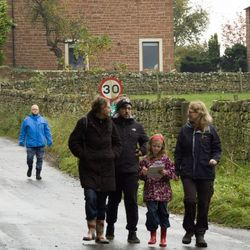Start of walk
- 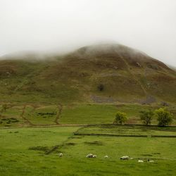Dufton Pike
- 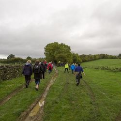Cow Fields
- 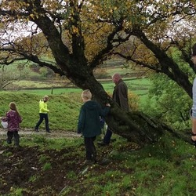Reaching the top
- 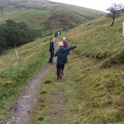Catching Up
- 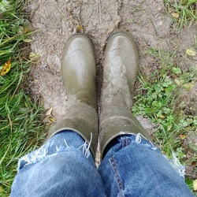Wellies
- 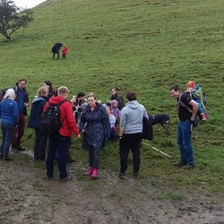Elevenses Stop
- 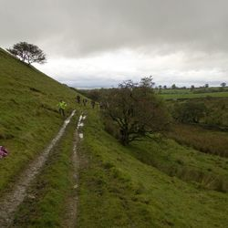Antonia
- 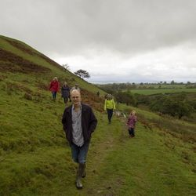Nice Wellies!
- 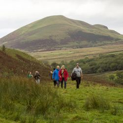Wermelings and Knock Pike
- 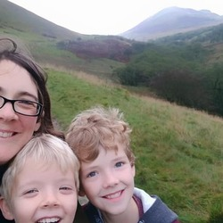Zabiegas
- 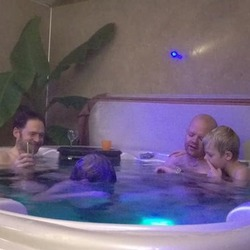Jacuzzi
- 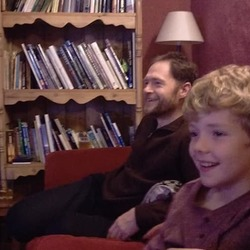TV Hits
- 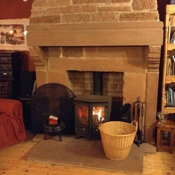Fires
- 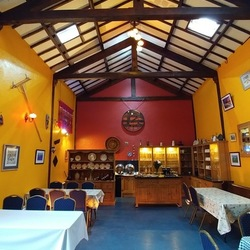Party Room
- 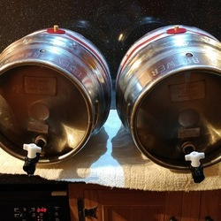Beer
- 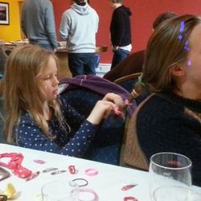Hair Dressing
 Toast Time
Toast Time- 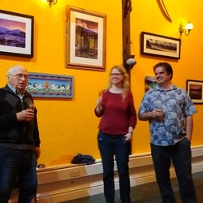Hans Toasts
- 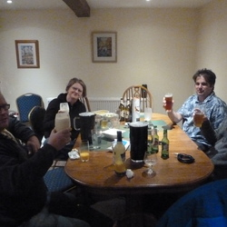After Party
- 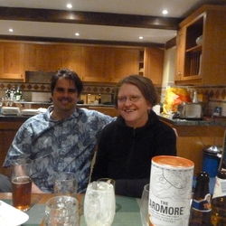Siblings in Law
- 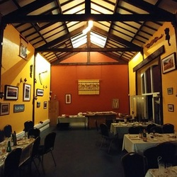Party Room
- 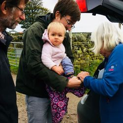Getting Ready
- 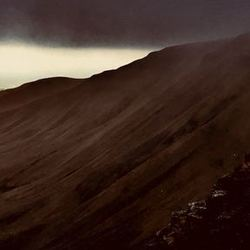Windswept Walk
- 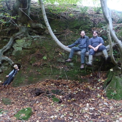Tree Swinging
- 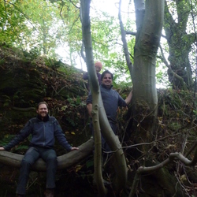Cliff Climbing
- 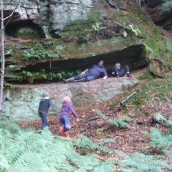Nice House
- 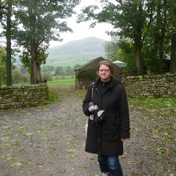Katrin
- 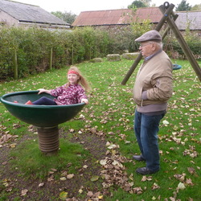Spinning
- 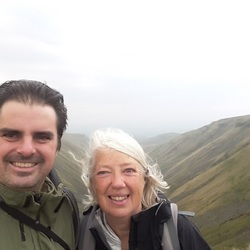James and Aggie
- 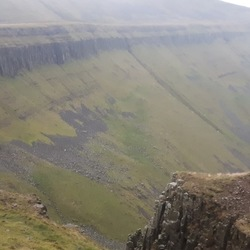High Cup Nick
- 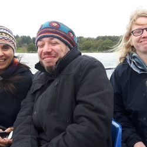Boat Trip
- 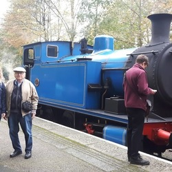Admiring the Train
- 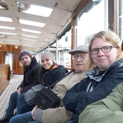Windermere Steamer
- 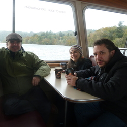Hot Chocolate Warmer
- 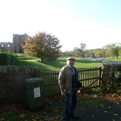Castle Views
- 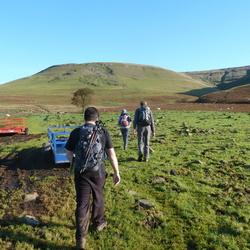The Sun at Last!
- 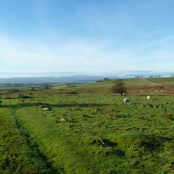The Lakes
- 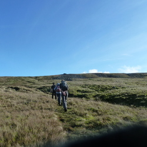Nearly Dry Feet
- 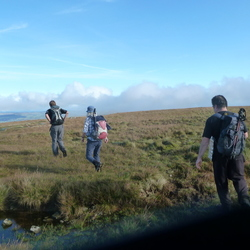Moor Top
- 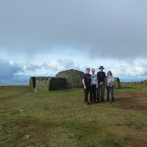Crossfell Summit
- 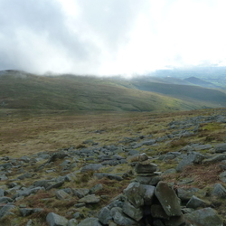Clouds arriving
- 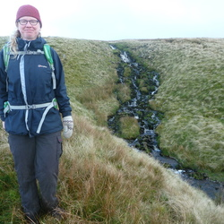A Waterfall
- 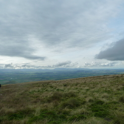Eden Valley
- 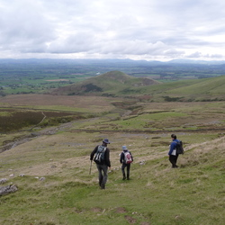Knock Pike
- 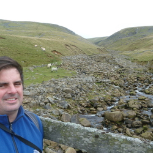A River
- 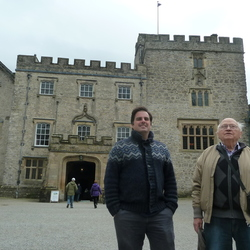Sizergh Castle